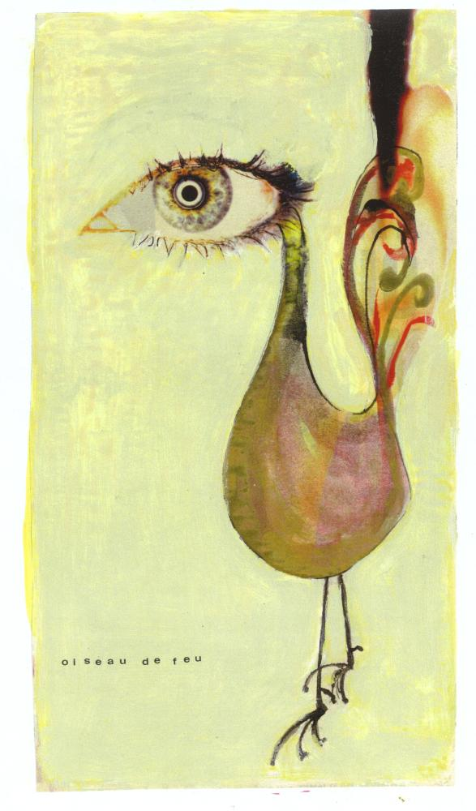

Coq'Art Home page for recent versions of Coq (up to V8.10)

This work is licensed under a Creative Commons Attribution-ShareAlike 4.0 International License.

All the examples and exercises on this site are copyright Yves Bertot and Pierre Castéran, unless explicitely mentionned. The tutorial on [co-]inductive type has been written by Edurdo Gimenez and Pierre Castéran.
The tutorial on type classes and user-defined relations has been written by Pierre Castéran and Matthieu Sozeau.
Coq'Art is the familiar name for the first book on the
Coq proof assistant and its underlying
theory the Calculus of Inductive Constructions , written
by Yves Bertot
and Pierre
Castéran.
Interactive Theorem Proving and Program Development
Coq'Art: The Calculus of Inductive Constructions
Series: Texts in Theoretical Computer Science. An EATCS Series
Bertot, Yves, Castéran, Pierre
2004, XXV, 469 p., Hardcover
ISBN: 3-540-20854-2
Look at Springer site .
Drawing "Oiseau de feu" by courtesy of Michel Mendès France
Contents
This directory contains a bunch of files tested with versions of Coq up to
V8.10. It is structured as follows:
16 directories, each one associated with a chapter of the book:
Each directory contains a list of exercises, and an adaptation to recent versions of Coq of
the scripts presented in the corresponding chapter of the book. Each index file contains
also corrections of the errors that were kindly signalled to us by the readers.
- A Brief Presentation of Coq
- Gallina: Coq as a Programming Language
- Propositions and Proofs
- Dependent Product
- Everyday logic
- Inductive Data Structures
- Tactics and automation
- Inductive Predicates
- Functions and their specification
- Extraction and imperative programming
- A Case Study : binary search trees
- The Module System
- Infinite Objects and Proofs
- Foundations of Inductive Types
- General Recursion
- Proof by reflection
Additional material
- More exercises (not in the book)
- Coq sources associated with
the tutorial written with Matthieu Sozeau on type classes and user-defined relations
- Coq sources associated with
the tutorial written with Eduardo Gimenez on inductive and co-inductive types
Errata
Some typos where found after the printing of the book. They are reported
chapter by chapter, after the sources and exercises.
Many thanks to
Stefan Karrmann for all the remarks he sent to us.
Comments are welcome
Thank you in advance for any comment, alternate solution, or any way to
improve this site.